Pizzeria gourmet · Stradella
Portatori di felicità.
La pizza contemporanea di Vincenzo Nese: tradizione napoletana, ricerca sugli ingredienti, innovazione nel piatto.
Due Spicchi Gambero Rosso · Pizzerie d’Italia 2026
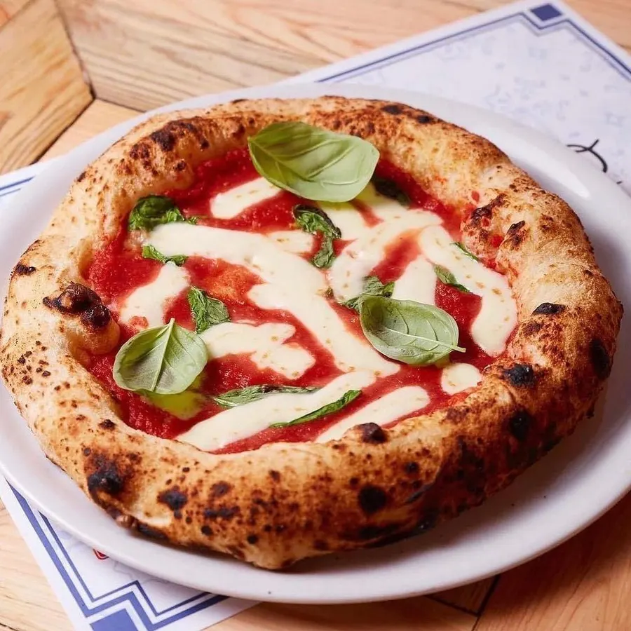
Tradizione
La pizza napoletana, e un mestiere tramandato da padre in figlio.
Ricerca
San Marzano D.O.P., fior di latte campana, alici di Cetara, pistacchi di Bronte, limoni di Amalfi.
Innovazione
Pizze e calzoni «contemporanei»: accostamenti nuovi su un impasto che resta leggero.
Le contemporanee
Girale, una per una.
Trascina la giostra, oppure usa le frecce.
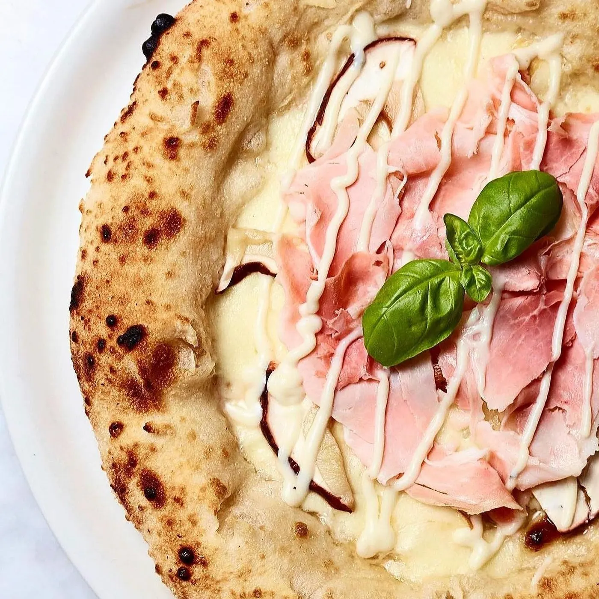
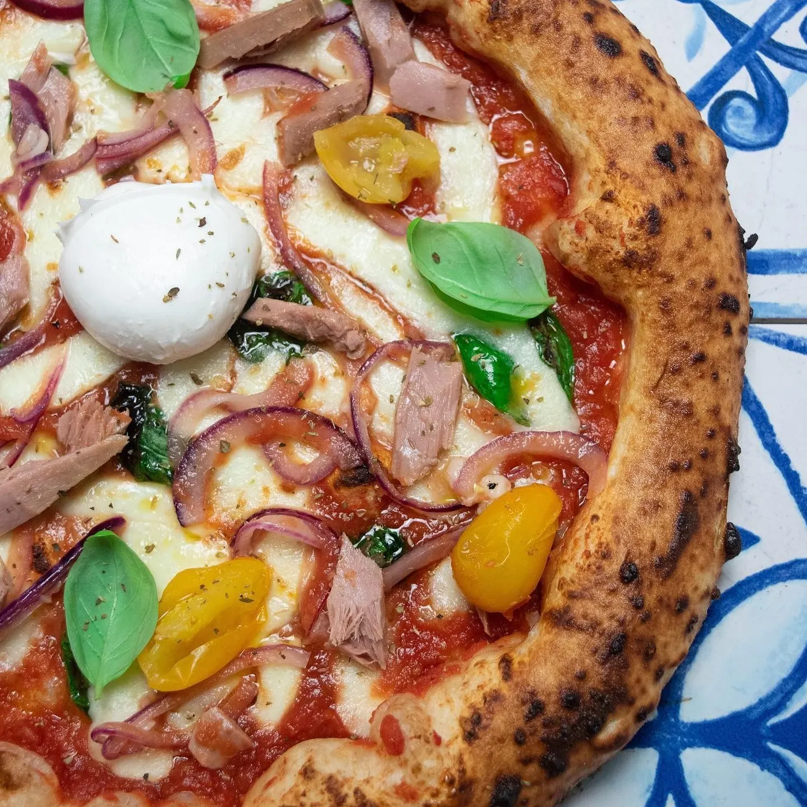
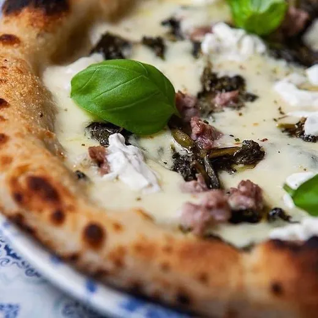
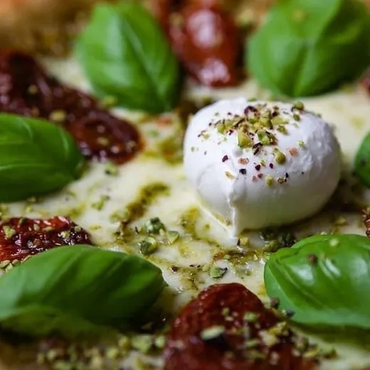
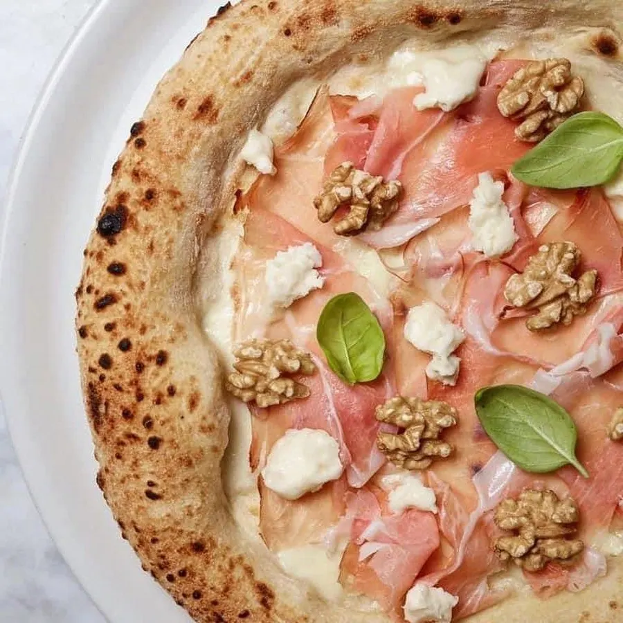
Regina Margherita
La margherita di casa: «una lunga storia d’amore tramandata da padre in figlio».
E poi
- FigataFior di latte campana, culatello di Zibello, riduzione di fichi del Cilento, burratina pugliese
- FusionSalmone norvegese, semi di sesamo, riduzione di soia, burratina pugliese, granella di pistacchi di Bronte
- DeliziosaFior di latte campana, crudo San Daniele 19/22 mesi, burratina pugliese, granella di pistacchi di Bronte
- RagùRagù di Chianina fatto in casa, stracciatella pugliese, funghi porcini
- SfiziosaFior di latte campana, porchetta di Ariccia, provola campana, patate al forno, maionese al limone di Sorrento
- D.O.C.Pomodoro San Marzano D.O.P., mozzarella di bufala campana, pomodorini freschi, basilico fresco di Albenga
- ScugnizzoFior di latte campana, alici di Cetara, pomodoro Cuore di Bue, scorza di limone d’Amalfi
- VeggyVellutata di zucca e verdure di stagione
Dal menu della pizzeria. Le proposte possono cambiare: per il menu di oggi, per le classiche e per allergie o intolleranze chiamaci.
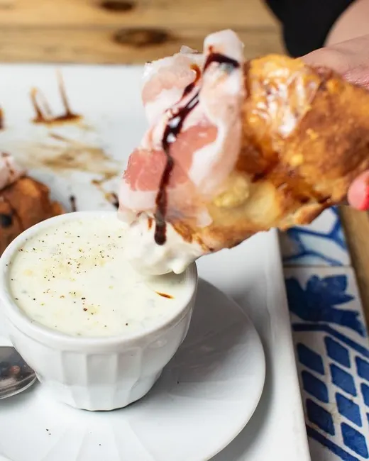
Calzoni contemporanei
Sembra una colazione. È un calzone.
Il «Fake Cappuccio e Brioche» è il nostro modo di guardare la tradizione: un calzone in crosta di grana, da intingere nel suo cappuccino di gorgonzola.
- Fake Cappuccio e BriocheIn crosta di Grana Padano 24 mesi: fior di latte dei Monti Lattari, a fine cottura pancetta piacentina, riduzione di aceto balsamico I.G.P. Servito con un cappuccino di gorgonzola D.O.P. Presentato al Gambero Rosso.
- Chiaro di LunaIn crosta di Pecorino Romano: provola campana, pesto di pistacchi di Bronte, mortadella I.G.P. di Bologna.
- DivinaIn crosta di Grana Padano 24 mesi: speck del Trentino Alto Adige I.G.P., noci di Sorrento, crema di radicchio rosso I.G.P., gorgonzola D.O.P.
Chi c’è al forno
Vincenzo Nese, lo scugnizzo.
Classe 1995, porta avanti una storia di famiglia: per lui la pizza è «una lunga storia d’amore tramandata da padre in figlio». Da lì è partita la sua strada verso la pizza contemporanea.
- In televisione
- Rai 2, La7 con «Mica pizza e fichi», Gambero Rosso Channel.
- In cattedra
- Masterclass sulla sua pizza al Sigep di Rimini.
- A quattro mani
- Una pizza firmata insieme a Gino Sorbillo.
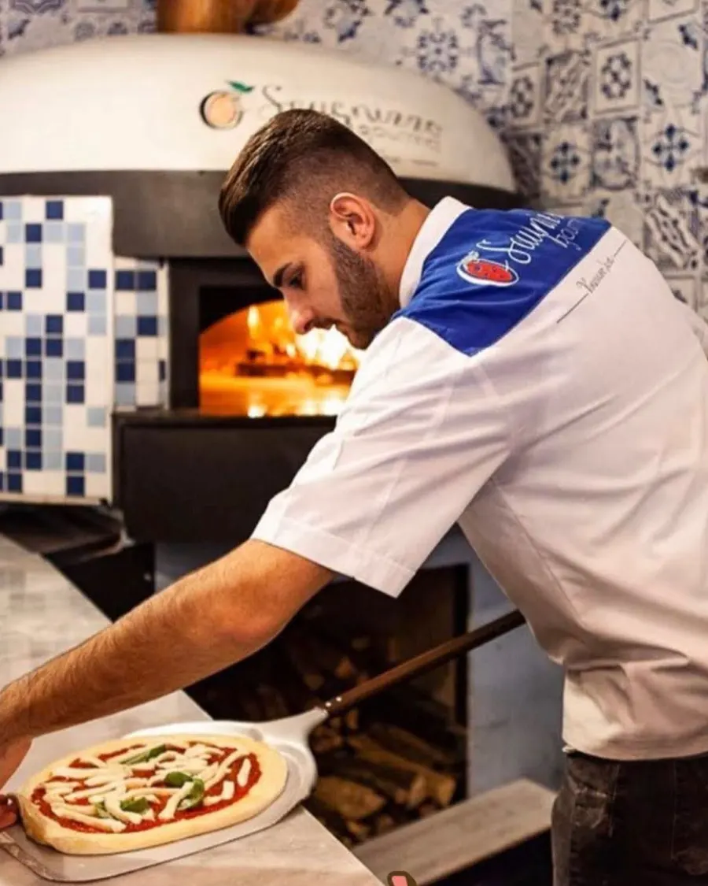
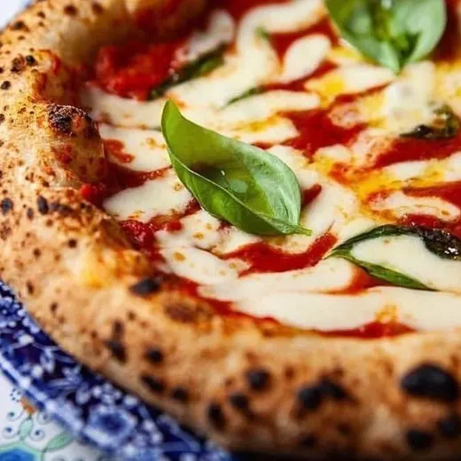
Riconoscimenti
Tra le migliori pizzerie d’Italia.
- 2026Due SpicchiGambero Rosso · Pizzerie d’Italia
- 2022Guida Identità GoloseIn guida, tra le pizzerie d’autore
- 2021Pizzerie Eccellenti50 Top Pizza
Il locale
Un angolo di Costiera, in Oltrepò.
Maioliche dipinte, legno chiaro, azzurro alle pareti. E quando la stagione lo permette, si mangia nel Limoneto.
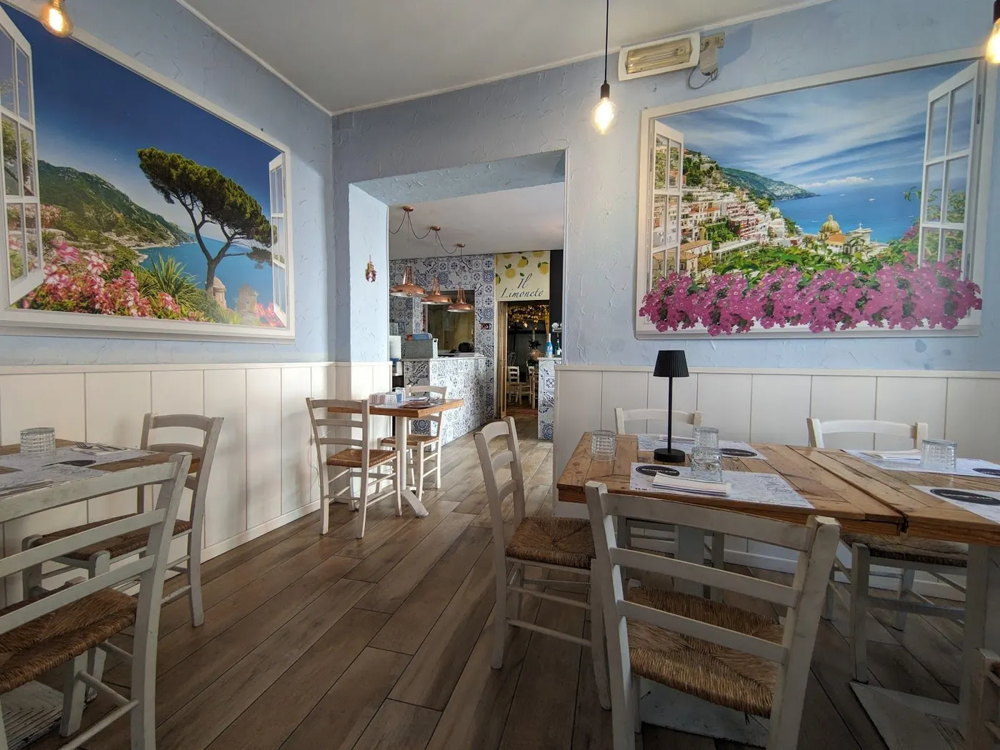
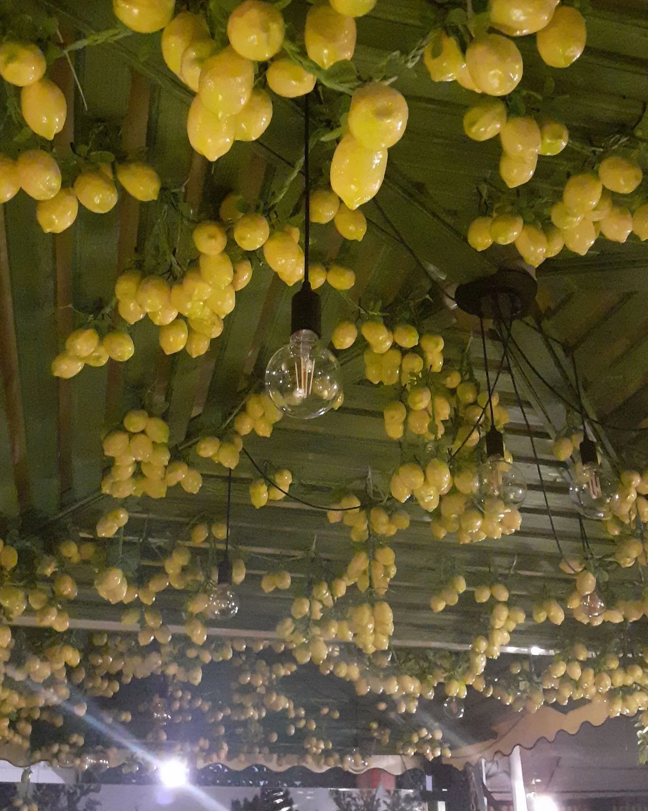
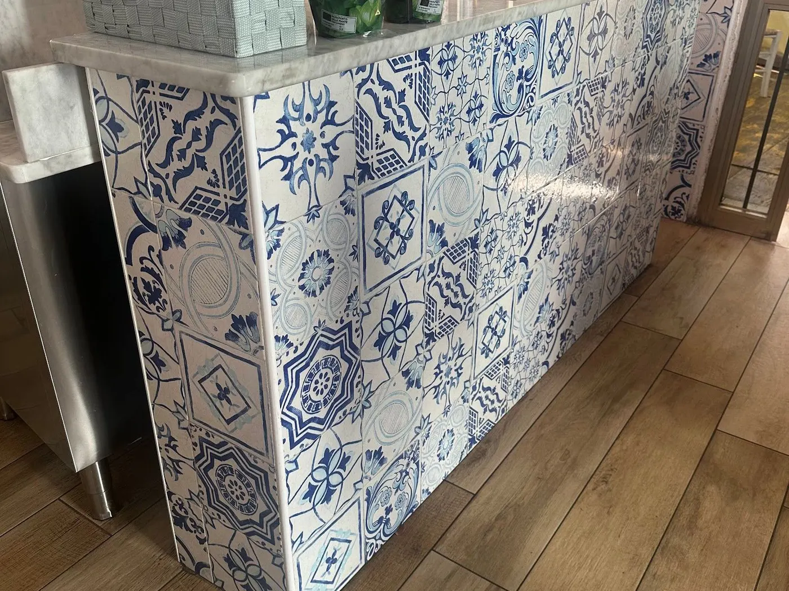
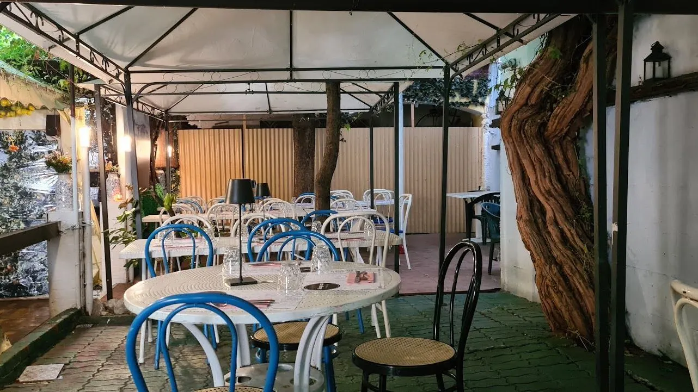
Prenota
Un tavolo, una telefonata.
Via Bottini, 12, 27049 Stradella (PV)
| Lunedì | Chiuso |
|---|---|
| Martedì | 12:00–14:00 · 19:00–22:00 |
| Mercoledì | 12:00–14:00 · 19:00–22:00 |
| Giovedì | 12:00–14:00 · 19:00–22:00 |
| Venerdì | 12:00–14:00 · 19:00–22:00 |
| Sabato | 12:00–14:00 · 19:00–23:00 |
| Domenica | 19:00–22:00 |